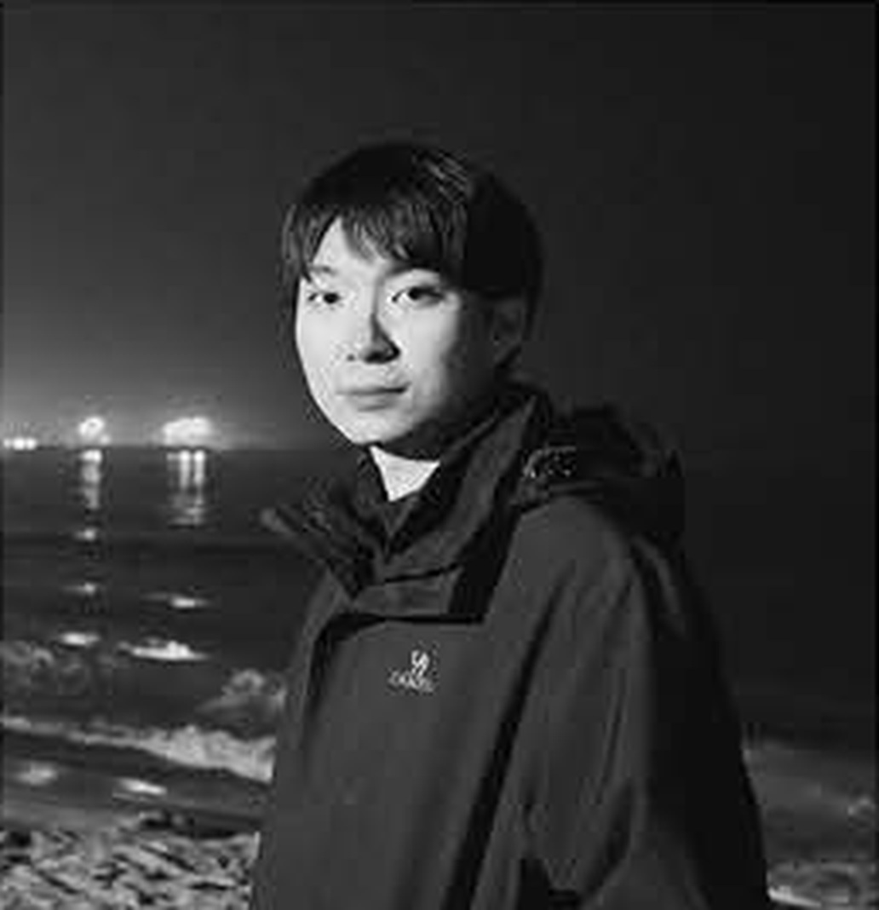

Architecture / Urban Design
NIU JINGREN
01
Position
设计立场 / Design Position
建筑不只是被观看的物体，
更是人与时间共同生活的地方。
我的设计关注建筑与场地的关系、公共生活的组织，以及旧有结构在新语境中的延续。 从交通建筑、城市更新到文化空间，以清晰的秩序回应复杂现实。
- 05
- 核心作品
- 08
- 年专业训练
- 10+
- 竞赛与奖项
02
Works
精选作品 / Selected Projects
Five Studies of Place
五个项目，五种尺度：从一座站房，到一片城市。
03
Practice
职业实践 / Design Practice
Built Through Practice
04
Archive
其他作品 / Other Works
Observation & Craft

Niu Jingren
Beijing, CN
05
Profile
个人简介 / About
在场地、时间与日常生活之间，寻找建筑真正的秩序。
牛静仁，建筑学背景，现关注城市更新、公共建筑与建筑空间叙事。 具备从场地研究、概念生成到图纸表达和实体模型的完整设计经验。
- 2023—2026
- 中央美术学院 建筑学 / 媒体城市设计方向 / 全额奖学金
- 2017—2022
- 石家庄铁道大学 建筑学 / GPA 3.46/4 / 专业排名 3/72 / CET-6
06
Experience
履历 / Experience
Research, Awards & Skills
实践经历
- 中国城市规划设计研究院 照明规划与城市更新项目
- 舍园建筑设计事务所 建筑方案、室内空间与模型制作
- 北方工程设计研究院有限公司 建筑方案深化与表现配合
竞赛获奖
- 第三届匠作奖 · 优秀奖 全国大学生室内空间设计竞赛
- 米兰设计周 · 三等奖 中国高校设计学科师生优秀作品展
- 台达杯 · 优秀奖 国际太阳能建筑设计竞赛
工具与技能
- Rhino
- Revit
- SketchUp
- AutoCAD
- Adobe CC
- Blender
- D5 Render
- Unity / UE
- Stable Diffusion
- Midjourney
取得联系 / Contact
Let’s make
place matter.
332362564@qq.com
查看完整作品集
Beijing, China